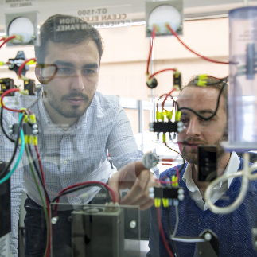

Get In Touch
Have questions about Master of Technology (M.Tech) admissions?
Share a few details and our admissions counsellors will walk you through eligibility, fees, scholarships and the application timeline — no obligation.
- Fast Response — a counsellor calls back within 24 hours.
- One-on-One Guidance — personalised help with eligibility and documentation.
- No Obligation — ask questions before you decide to apply.
Fill this in and we'll reach out shortly.
Overview
Master of Technology (M.Tech)
The Master of Technology (M.Tech) program at PES University stands as a beacon of advanced education and specialization in the realm of engineering and technology. It represents a pivotal phase in the academic journey of aspiring engineers and technologists, providing them with a unique opportunity to immerse themselves in the intricacies of their chosen field.
This postgraduate program, spanning two years (4 semesters), serves as a crucible for nurturing the brightest minds in various domains, from computer science to electronics engineering. It empowers students to transcend the boundaries of conventional knowledge, encouraging them to explore the uncharted territories of technology.
Our M.Tech program is distinguished by its comprehensive curriculum, blending theoretical foundations with hands-on practicality. Students engage in rigorous coursework, conduct cutting-edge live industry research, and get a chance to contribute to pioneering projects under the mentorship of our esteemed faculty members. This multifaceted approach equips our graduates with the skills and insights required to excel in an increasingly competitive and innovation-driven world.
As technology continues to reshape our lives and industries, the M.Tech program @ PES University serves as a gateway to promising careers, offering the potential for transformative advancements.


Eligibility
Atleast 50% in Engineering degree in a relevant stream from a recognized University. Test Scores in PES Entrance Test, PGCET or GATE accepted.
Why PES University
Key Differentiators of this program at PESU
Interdisciplinary Approach
Our programs encourage interdisciplinary learning allowing students to gain a broader perspective and the ability to tackle complex problems from various angles.
Research Opportunities
We offer robust research opportunities, allowing our M.Tech students to engage in cutting-edge live industry projects, collaborate with industry partners, and contribute to groundbreaking innovations.
Paid Internship Opportunities
We offer attractive stipend for our students for the internships that they pursue during their final year of study with us.
Industry Integration
Our M.Tech programs align closely with industry needs that provide students with valuable exposure to real-world challenges, internships, and industry partnerships, enhancing their employability.
Academic Excellence
our M.Tech program stand out for their rigorous academic standards, distinguished faculty, and commitment to quality education.
Placements and Career Services
Our robust placement and career services is a major differentiator, helping students transition seamlessly from academia to their desired careers.
State-of-the-Art Facilities
Access to our modern labs, libraries, and technology infrastructure can be a significant differentiator, ensuring that students have the tools and resources necessary for their academic and research pursuits.
Placements
Placement Opportunities & Career Assistance
Strong Industry Connections
PES University has established robust relationships with industry leaders and technology-driven companies. This network provides our M.Tech graduates with access to a wide array of placement opportunities at our on-campus placement drives.
Entrepreneurial Ecosystem
For those interested in entrepreneurship, PES University fosters an entrepreneurial spirit, offering support and resources to help graduates start their own tech ventures or join startups in various capacities.
Career Development Services
PES University provides dedicated career services to assist students in preparing for interviews, refining their resumes, and developing soft skills, ensuring they are well-prepared for the job market.
Paid Internship Programs
The university often collaborates with industry partners to offer internship programs, giving our students real-world experience and the chance to establish valuable industry connections as well as earn as handsome stipend, which can lead to full-time job offers through on-campus drives and through pre-placement offers from the companies where students are interning.
Diverse Specializations
PES University offers M.Tech programs in various engineering and technology domains, enabling students to choose specializations aligned with their interests and industry demand. This diversity enhances their employability in niche sectors of their choice.
Choose Your Path
Specializations/ Domains
- Cloud Computing
- Cybersecurity
- Machine Intelligence
- Signals and Systems
- Communication Systems
- VLSI Design
Curriculum
Curriculum Structure
M.Tech in Computer Science Engineering (CSE)
- Computer Systems for Programmers
- Advanced Data Structures
- Scalable Computing
- Stochastic models and Machine Learning
- Cyber Security Essentials
- Special Topic - I
- Topics in Advanced Algorithms *
- Distributed Systems
- Elective - I
- Elective - II
- Elective - III
- Special Topics - II
- Elective - I
- Million Way Parallelism
- LLMs and its Applications
- Topics in Computer and Network Security
- Elective - II
- Advanced Cloud Computing
- Virtual Reality and its applications
- Software Security
- Elective - III
- Advanced Big Data Analytics
- Deep Learning Theory and Practices
- Cryptography
- Electives To Be Opted For Specialization
- Cloud Computing
- Machine Intelligence
- Cyber Security
- Project Work Phase I
- Special Topic-III
- Project Work Phase II
- Special Topic-IV
M.Tech in Electronics and Communication Engineering (ECE)
- Advanced Wireless Communication
- Advanced Embedded Systems
- Modern Digital Signal Processing
- Wireless Communication and Networks
- Analog VLSI
- Low Power VLSI Design
- Image and Video Processing
- Cryptography and Watermarking
- CMOS Memory Design and Testing
- Real Time Embedded Systems
- Speech and Audio Processing
- Soft Skills
- Advanced Digital Design using Verilog and Verification
- Machine Learning Techniques
- Mapping Algorithm to Architecture
- Test and Debug of Analog and Digital Circuits
- Reinforcement Learning Applications (Common Elective for “Communication Systems” and “Signals and Systems”) domain)
- Error Control Coding
- System On Chip Architecture
- Heterogeneous Computing
- Adaptive Signal Processing
- Optimization Techniques
- Radio Frequency Integrated Circuit Design
- RF and Optical Amplifier Design
- Robotics
- Research Methodology
- Project Phase I
- Antenna theory
- Selected Topics in Reconfigurable Computing
- Formal Verification of Hardware Designs
- Micro-electro mechanical techniques and optics
- Deep learning
- Project Phase II
- Antenna Design using simulation tools
- VLSI for DSP
- Post Silicon Validation
- High Speed Serial Interface Design
- Design and Implementation of RISC-V Microprocessor
- Digital Processing of Random Signals
Is It For You?
Who should pursue this Program?
The M.Tech program at PES University is ideally suited for aspiring engineers and technologists who are passionate about advancing their knowledge and expertise in their chosen field. Our program caters to individuals who
Seek Specialization
- Those looking to specialize in a specific area of engineering or technology, whether it's computer science or electronics can benefit immensely from the in-depth focus provided by the M.Tech program at PES University.
Desire Career Advancements
- The candidates who are looking to completely transform their career prospects with a jump in pay scales and better their roles and responsibilities with placement opportunities at big MNC’s.
Desire Research Opportunities
- If you have a keen interest in research and aspire to contribute to technological advancements, PES University's M.Tech program offers robust research opportunities, enabling you to explore innovative solutions to real-world challenges.
Aspire for Leadership Roles
- M.Tech graduates from PES University often find themselves well-prepared for leadership positions in industry, academia, or research and development. This program equips you with the skills and knowledge needed to excel in such roles.

Value Quality Education
- Individuals who value academic excellence, world-class faculty, and state-of-the-art facilities will find PES University's M.Tech program aligns with their commitment to a high-quality education.
Embrace Global Perspectives
- Those looking to broaden their horizons and benefit from global exposure through collaborations, international partnerships, and diverse student interactions will find our program enriching.
Careers
Recruiters


Financial Support
Merit scholarships, awarded on performance
Over ₹140 crores in merit scholarships have been given to PES University students since 2014.
Merit Scholarships
Awarded on CGPA / SGPAProf. MRD Scholarships
Merit Certificate + 50% Tuition Fee Refund for Top 5% of the Students based on their CGPA.
Prof. CNR Rao Scholarships
Merit Certificate + 40% Tuition Fee Refund for the next 20% of the Students based on their SGPA.
Distinction Awards
Merit Certificate for Students securing 7.75+ SGPA.
PES Loyalty Program
Awarded on family / institutional ties, every year of studyPES Employees
Children of full-time staff, 5+ years employment.
PES Institution Students
Graduates of any PES institution or sister concern.
Siblings of Students
Siblings of currently enrolled PES students.
Alumni Family
Siblings and children of PES University alumni.
University Highlights
Recognition beyond the programme
The accreditations and rankings behind PES University as a whole.
University in Karnataka
Among new universities under 5 years, ranked by KSURF.
NAAC Accredited
PES University holds NAAC's top-grade accreditation nationally.
B-School in Karnataka
Times of India B-School Rankings, 2021.
Most Preferred B-School
Second only to IIM Bangalore among B-School aspirants, per Times of India.